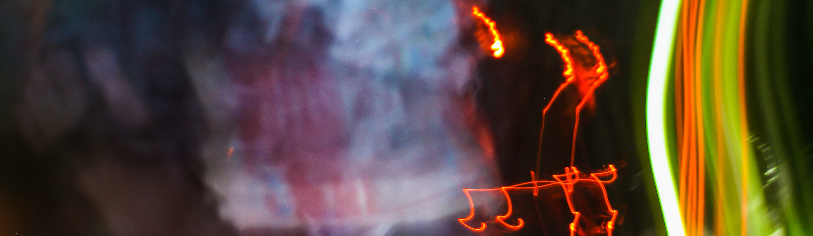
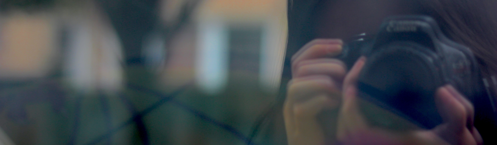

About Myself
I'm a GBDA student inspired by movement, colour, and the way design shapes how people experience ideas. I love turning concepts into visuals that feel intentional and expressive.

I'm a GBDA student inspired by movement, colour, and the way design shapes how people experience ideas. I love turning concepts into visuals that feel intentional and expressive.

I'm drawn to work that blends clarity with personality, whether that's a dynamic dance cover edit, a brand concept, or a clean publication layout.
I enjoy taking an idea and shaping its visual identity, from the mood and pacing to the colours, typography, and final presentation.
I'm especially interested in digital media, content creation, and exploring how visuals can create connection and impact.

I dance, explore digital design trends, and find inspiration in music, movement, and bold visual styles.
I love projects that challenge me to experiment and learn something new.
If you want to collaborate or chat about creative work,
feel free to reach out!